使用手册
从打开到上手，每个模块怎么用
这份手册按界面区域逐个讲：它是什么、在哪打开、怎么用、要注意什么。配图都是软件真实界面（演示项目，数据是假的）。版本以 0.4.120 为准，界面以后可能有小改动。
快速开始
系统要求
- macOS 12 及以上，Apple 芯片和 Intel 都支持。macOS 11 请到下载页用保留的 0.4.113。
- Windows 10 及以上（64 位）。安装包目前没有代码签名，第一次运行 Windows 可能弹出 SmartScreen 提示，点「更多信息 → 仍要运行」即可。
安装
从下载页下载对应系统的安装包。macOS 打开 dmg 后把 Eas-Term 拖进「应用程序」文件夹。
第一次打开
Eas-Term 自己不会写代码 —— 干活的是 Claude Code、Codex 这些 AI 命令行工具（下面统称 CLI），用你自己的账号登录。第一次打开会出现一个引导页：
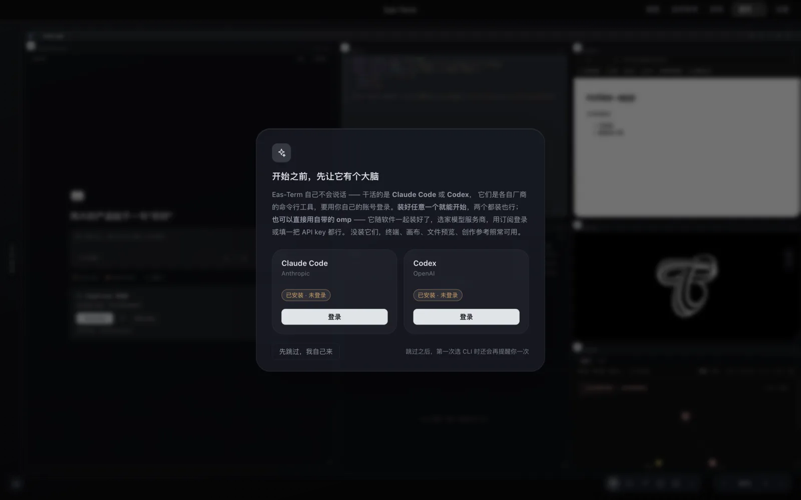
- 已经装好、登录过的 CLI 会直接显示「已登录」。
- 没装的，点按钮会打开一个终端帮你安装，装完用自己的账号登录一次。
- 不想用 Claude Code / Codex，也可以用随软件自带的 omp：它支持用多家服务商的订阅登录，或者填一个 API key（存进密钥柜，见密钥柜）。
- 点「先跳过，我自己来」可以直接进软件，之后随时在「设置 › AI 对话」里登录。
界面一览
主窗口分成几块区域，这份手册也按区域来讲。下图是画布模式，编号对应下表里的区域：
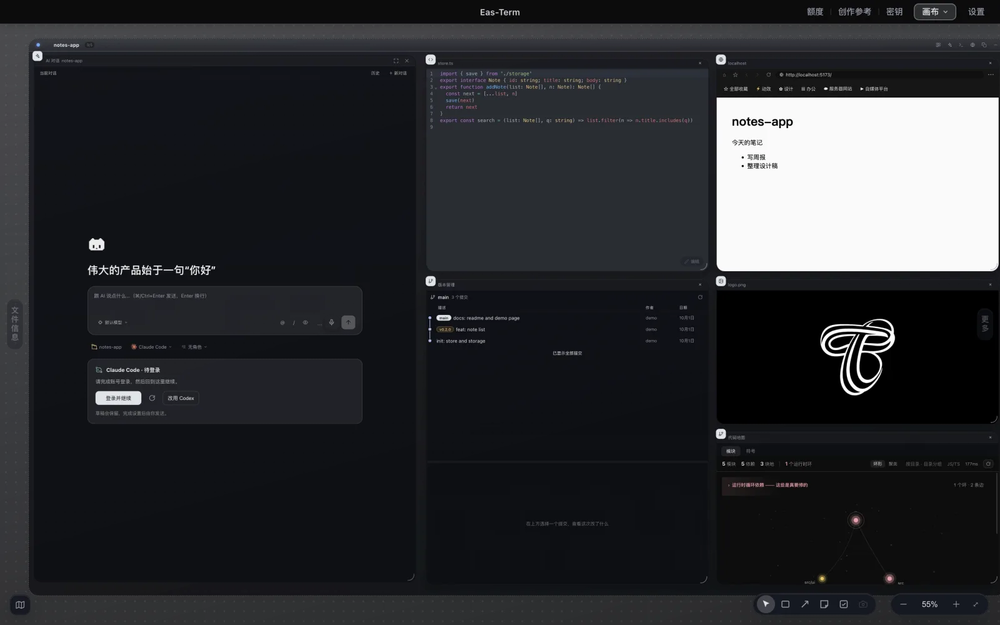
1234567891011- 额度
- 创作参考
- 密钥柜
- 模式切换
- 设置
- Frame 标题栏
- 左抽屉：文件信息
- 右抽屉：更多
- 画布工具条
- 缩放
- 缩略图
| 区域 | 在哪 | 里面有什么 | 手册 |
|---|---|---|---|
| 顶栏 | 窗口最上面（图中 1–5） | 额度、创作参考、密钥柜、模式切换、设置 | 第二部分 |
| 工作区 | 顶栏下面的整块 | 四种视图：画布、分屏、看板、甘特图；画布上的工具条、缩放、缩略图（9–11） | 第三部分 |
| Frame 与模块 | 画布上每个项目一块（6 是它的标题栏） | AI 对话、终端、文件、浏览器、版本管理、代码地图…… | 第四部分 |
| 两侧抽屉 | 画布左右边缘（7、8） | 左：文件信息；右：用量、技能库、插件、知识库 | 第五部分 |
| 窗口之外 | 屏幕顶部、你的手机 | 灵动岛、手机连接 | 第六部分 |
| 设置 | 顶栏「设置」或 ⌘, | 外观与语言、AI 对话、MCP 接入、更新、隐私…… | 第七部分 |
顶栏还会临时出现两样东西：有任务在排队、或某个工具调用被拦下时，会多出一个提醒，点它直达相关设置；有新版本时会出现更新角标。
额度
顶栏「额度」打开后，画布右上角会常驻显示 Claude、Codex、omp 三家的额度条（图 2 中的 1）。鼠标停上去能看到多久后刷新。
- Claude 的百分比需要在「设置 › AI 对话」里开启额度读取。
- 想看具体花在哪个项目、哪次对话上，用右抽屉里的用量。
创作参考
顶栏「创作参考」打开。这是一本给做产品的人用的术语手册：你知道想要什么效果，但不知道它叫什么、怎么跟 AI 说，就来这里找。
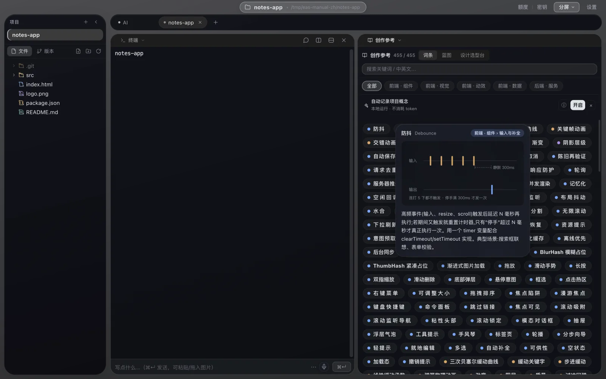
- 词条：几百个前端 / 后端手法（防抖、骨架屏、毛玻璃、视差…），按场景分类，可搜索。鼠标停上去看动画示意和解释。
- 点一下词条，它会挂到 AI 输入框里变成一个小胶囊，发送那一刻展开成一段完整、可执行的提示词。
- 蓝图：常见页面（首页、详情页、设置页…）由哪些区块组成，点区块直接找到对应的词条。
- 设计选型台：几百套设计系统按界面类型筛选、预览，可以把它的配色或完整规范附进对话。
密钥柜
顶栏「密钥」。API key、token 这类密钥都放这里，不要贴进对话。
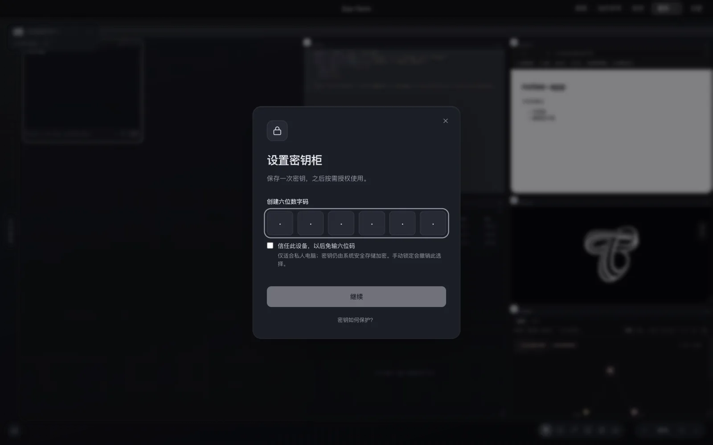
- 第一次用要设一个六位数字码；可以勾「信任此设备」，以后自动解锁。
- AI 或插件需要某个密钥时，会弹窗写清楚是哪个项目、哪个模块、要哪个密钥，你点同意它才拿得到。
- 密钥只注入给运行中的程序，不会出现在对话内容里。
工作区：四种视图
顶栏「模式切换」或 ⌘1–⌘4 在四种视图之间切换。同一批项目在四种视图里是同一份，只是换个角度看。
| 视图 | 适合 | 快捷键 |
|---|---|---|
| 分屏 | 像传统编辑器：左侧项目和文件，右侧标签页可以左右 / 上下分屏 | ⌘1 |
| 画布 | 无限画布，每个项目一块区域（Frame），终端、AI 对话、网页、代码、图片都能摆在上面 | ⌘2 |
| 看板 | 一个项目一张卡，按「待执行 / 进行中 / 已完结」管理 | ⌘3 |
| 甘特图 | 回看 AI 每一轮花了多久、哪些项目在推进 | ⌘4 |
画布与 Frame
画布是 Eas-Term 的主战场。每个项目在画布上是一块带标题栏的区域，叫 Frame（界面里也叫「造梦空间」）。项目里开的终端、AI 对话、网页、文件都放在它自己的 Frame 里。
新建一个项目 Frame
在画布空白处双击，会弹出项目菜单：可以搜索，可以按「最近使用 / 添加顺序」排，正在跑的项目排在最前。选一个就会建出它的 Frame；选「添加项目文件夹…」可以加新项目。
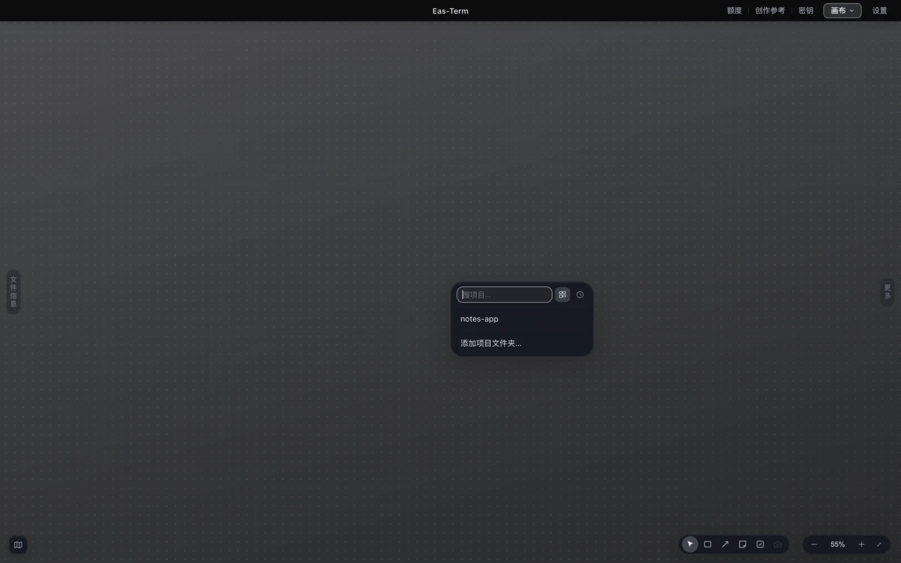
空 Frame：选一个 AI 开始
刚建出的 Frame 中间有三个按钮：Claude Code、Codex、omp，下面还有「先开个终端」。没装的 CLI 按钮会直接变成「安装」。
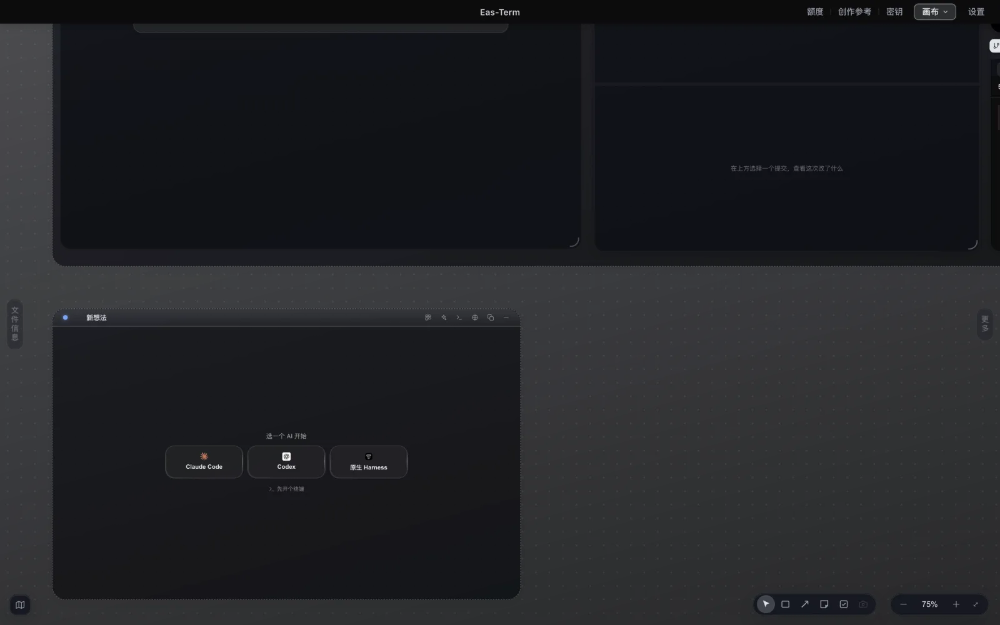
往 Frame 里放东西
在 Frame 里双击，弹出插入面板：按分类（全部、对话、文档、多媒体、3D、插件…）挑文件，也可以在「文件夹 / 最近」之间切换，它会记住你上次的选择。
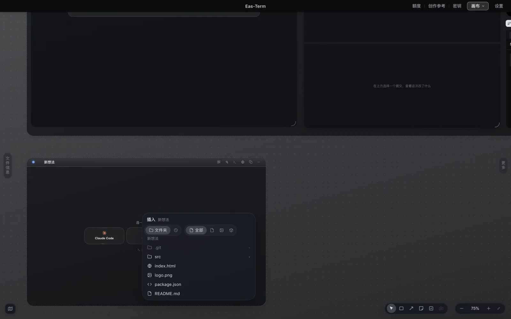
Frame 右键菜单
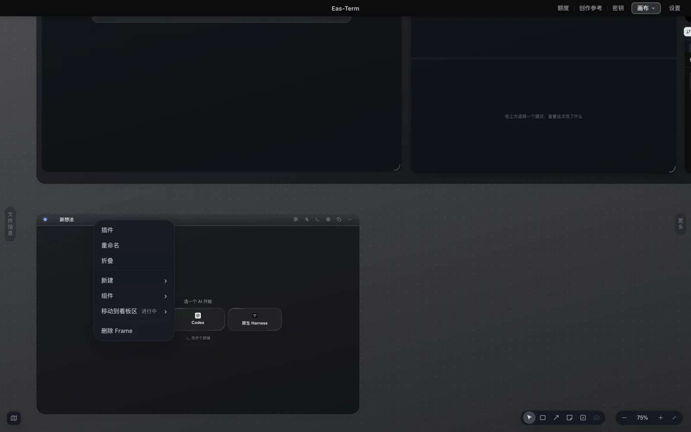
- 新建：AI 对话、终端、浏览器。
- 组件：版本管理、设计模块、团队面板、代码地图、插件面板（这些需要 Frame 绑定了项目）。
- 插件：打开已启用插件的面板。
- 另外还有重命名、折叠 / 展开、移动到看板区、删除 Frame。
画布工具与快捷键
- V 选择，R 矩形，A 箭头，N 批注，T 待办清单，按住空格拖动平移。
- ⇧⌘O 整理排列（宫格，终端排左上）；⌘= / ⌘- 缩放，⌘0 回到 100%，⇧⌘0 看全部；F 聚焦选中；⌘D 复制；Delete 删除。
- 空白处右键可以新建批注、新建待办清单。
最大化
每个模块右上角都能最大化，铺满窗口专心看；按 Esc 还原。最大化后内容固定按 100% 显示，不跟画布缩放走。
快照：连标记一起发给 AI
工具条最右的相机是快照：框选一块区域，连同你画的矩形、箭头、批注一起截图，带进 AI 对话里。拍完要不要清掉标记可以在「设置 › 画板」里定。
分屏模式
⌘1 切到分屏。左侧栏有「项目」和「文件 / 版本」两页，可以收成一条窄边；右侧是标签页，⌘D 向右分屏、⇧⌘D 向下分屏，⇧⌘] / ⇧⌘[ 切换标签。
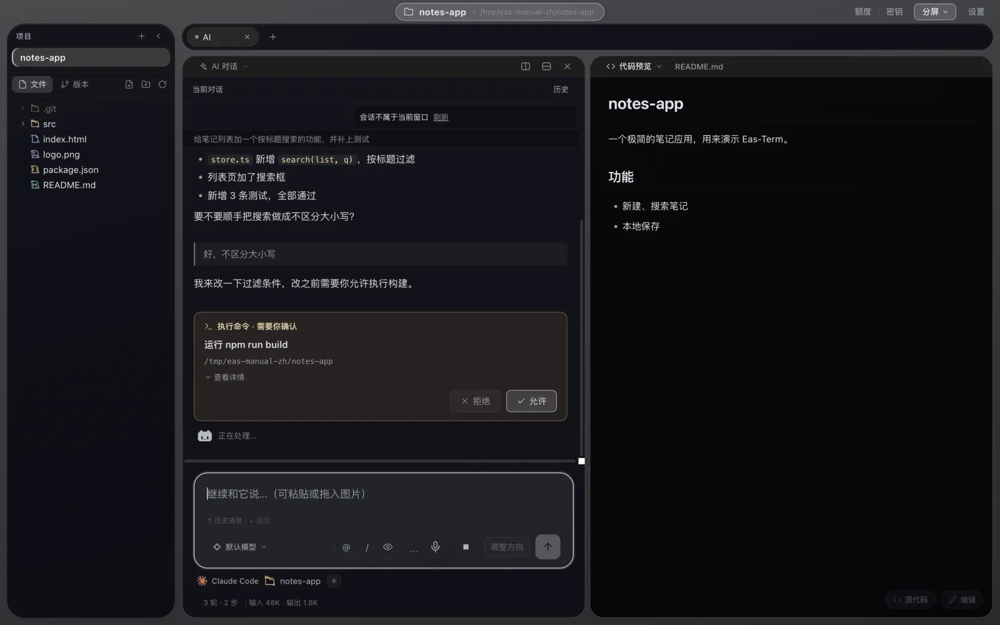
每个面板左上角的下拉可以把它切成别的类型：终端、AI 对话、文件预览、历史、知识库、代码地图、创作参考等。
看板
⌘3 切到看板。一个项目一张卡，卡上显示终端和 AI 对话的数量，标出哪些在跑、哪些在等你处理。
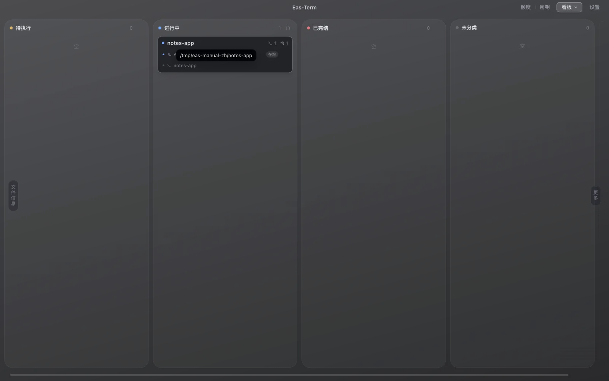
- 拖动卡片改状态；拖到边缘会自动滚动。
- 列可以新建、改名、删除（删了列，里面的项目回到「未分类」）。
- 画布上 Frame 右键「移动到看板区」也能改状态。
甘特图
⌘4 切到甘特图，回看 AI 每一轮从你发消息到它做完花了多久。
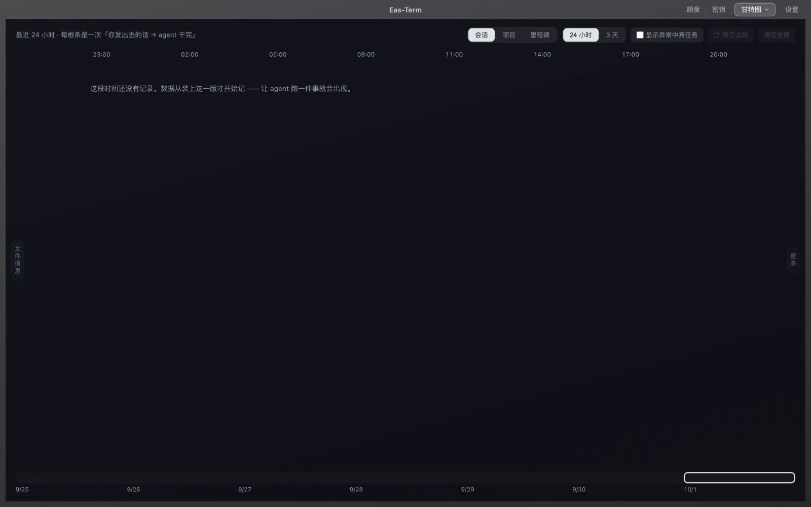
- 三种看法：会话、项目、里程碑（一次提交一个菱形，打了标签的大一号）。
- 「24 小时 / 3 天」切换，按住 ⌃ 滚轮缩放，底部的一周导航带可以跳日期。
- 右键一根条，可以跳到分屏、画布或看板里去看那个终端；也可以删单条或清空。
- 只记录装上这个版本之后的数据；刚开始用时这里是空的。
模块：Frame 里放的东西
在画布上，每个项目的 Frame 里可以放下面这些模块；在分屏模式里，它们是一个个面板。
AI 对话
AI 对话模块是你和 Claude Code / Codex / omp 说话的地方。和在终端里直接跑 CLI 比，它多了审批卡片、可点的选项、图片、队列、执行清单这些界面。
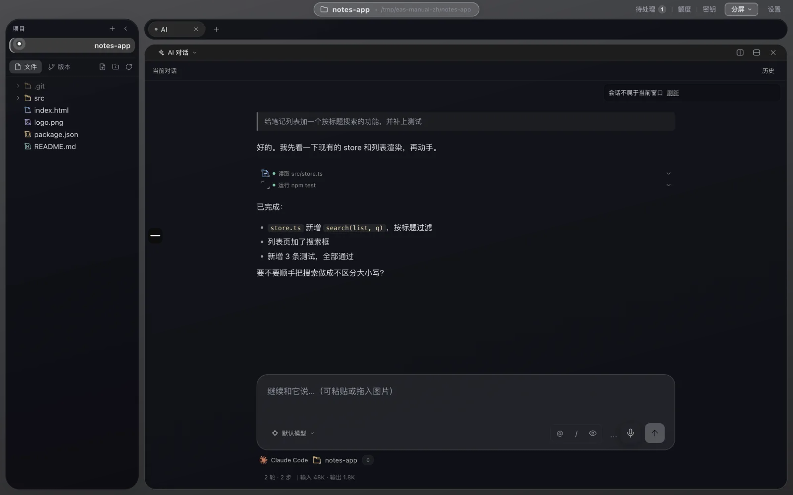
新建
⌘J、Frame 右键「新建 › AI 对话」，或空 Frame 里的三个按钮。开始前可以选：
- 模型和思考强度：输入框左下角的模型按钮点开，强度用滑块调。
- Codex 的沙箱：只读 / 可改工作区 / 完全放开。
- 角色：输入框下方「无角色」那里可以挑一个角色卡片，它规定 AI 的职责和能力边界（比如不许改文件、不许跑命令），还可以让它在「独立分支」里干活。
输入框
- ⌘Enter 发送，Enter 换行。
- 输入 @ 引用：文件、文件夹、技能、插件、网页标签、创作参考词条……选中的会变成一个小胶囊。
- 输入 / 调用命令和技能。
- 可以直接粘贴或拖进图片，也可以带上刚拍的画布快照；输入框右侧的麦克风是语音输入。
- 发送前点输入框里的「眼睛」图标，可以预览实际会发出去的文字、图片和引用内容。
- AI 回复里给的建议，按 Tab 可以填进输入框（只填不发）；输入框空着时按 ↑ 能回填这个会话里你发过的话。
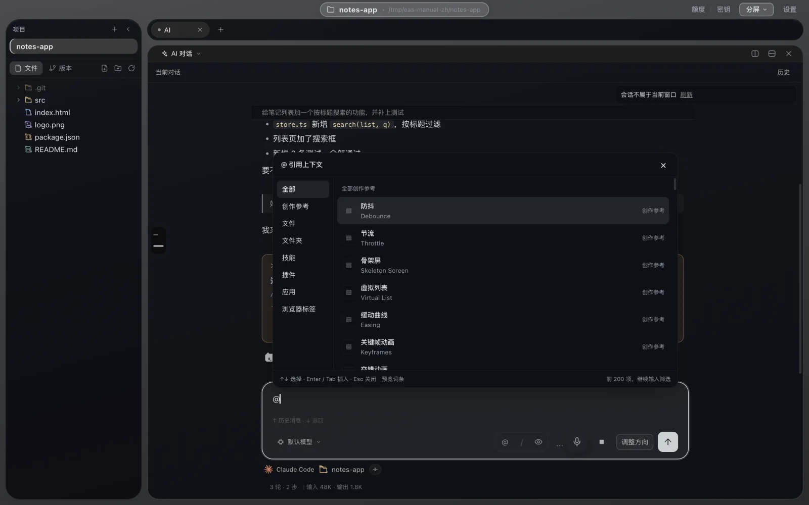
审批
AI 要执行命令、改文件、调用工具时，会弹出审批卡片，写清它要做什么、在哪个目录。点「允许」或「拒绝」。
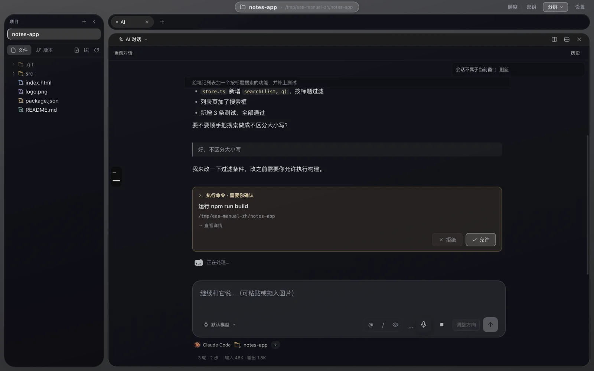
想少被打扰，可以在「设置 › AI 对话」里调：「先问再做」开关，以及 omp 的三档审批（直接执行 / 全部审批 / 仅命令审批）。
AI 忙的时候
- 再发的消息会进队列，可以取消、调顺序，等这一轮结束自动发出。
- 调整方向：先停掉当前这一轮，再优先发你的新消息 —— 用来纠偏。
- 输入框旁的停止按钮可以直接停。
对话里能看到的
- 右侧的提问导航，长对话里快速跳到你问过的某一句；离开底部时有「回到最新」。
- 工具调用记录默认折叠，点开看细节。
- AI 列出几个选项让你选时，会变成可以点的卡片。
- CLI 返回的图片直接显示，可以放大，并保存在本地。
- 执行清单：多步骤任务会在对话顶部显示一份清单，AI 做完一步就自动打勾，可以展开看详情。
- 后台任务：AI 在后台跑着的命令（比如开发服务器）会显示「后台运行中」，有单独的提示音，灵动岛同步显示。
历史与压缩
- 右上角「历史」：按本模块 / 本项目 / 置顶查看以前的对话，可以搜索、预览、接着聊。
- 对话太长时可以手动压缩（要确认）：AI 会把前文整理成摘要继续，省额度。
协同板
同一个项目里有几个 AI 在不同分支上干活时，它们的进展会写到项目的 .eas/board.md（协同板）。如果别的分支正在改同一个文件，对话上方的分支徽标会提示你先看一眼。
终端
标准的终端，⌘T 新建，或者 Frame 右键「新建 › 终端」。下方的输入框支持粘贴图片、语音输入；按住 ⌘ 点击输出里的路径可以直接打开文件。右键可以插入每个终端各自一份的待办清单。
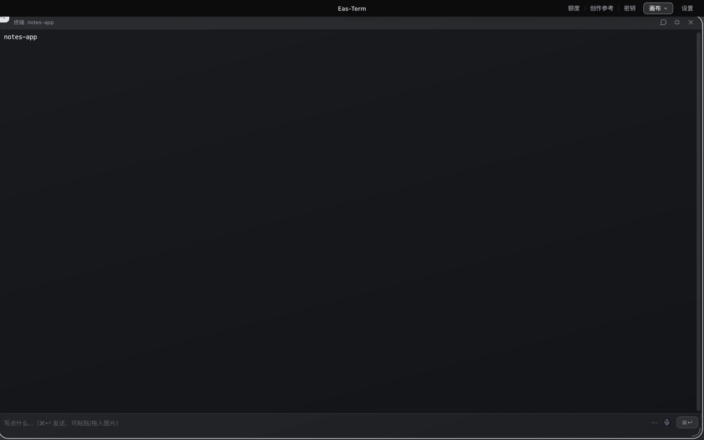
claude、codex 也完全可以；用 AI 对话模块的好处是多了审批卡片、选项、图片、执行清单这些界面。语音输入
AI 对话和终端的输入框右侧都有麦克风。识别在本机离线完成，不上传音频。第一次用要下载识别模型。
- 有三档：标准（过滤人声以外的声音）、强过滤（环境嘈杂时用，可能漏掉轻声）、基础（只用设备自带降噪）。
- 说完松开或再点一次，识别出的文字会写进输入框，不会自动发送。
文件与预览
从文件树、插入面板或 AI 的回复里打开文件，会在画布上变成一个预览模块：
- 代码：语法高亮，右下角「编辑」可以直接改；Markdown 渲染显示，代码块带复制按钮；Diff 看改动。
- HTML：可以选「预览代码」或「预览网页」。
- 图片：双击放大、拖动平移，还能用宫格看同一文件夹里的其他图。
- 视频：点别处会自动暂停，可以全屏；音频直接播放。
- 3D：目前只有 .glb 能预览（第一次要下载约 1MB 的查看器）。
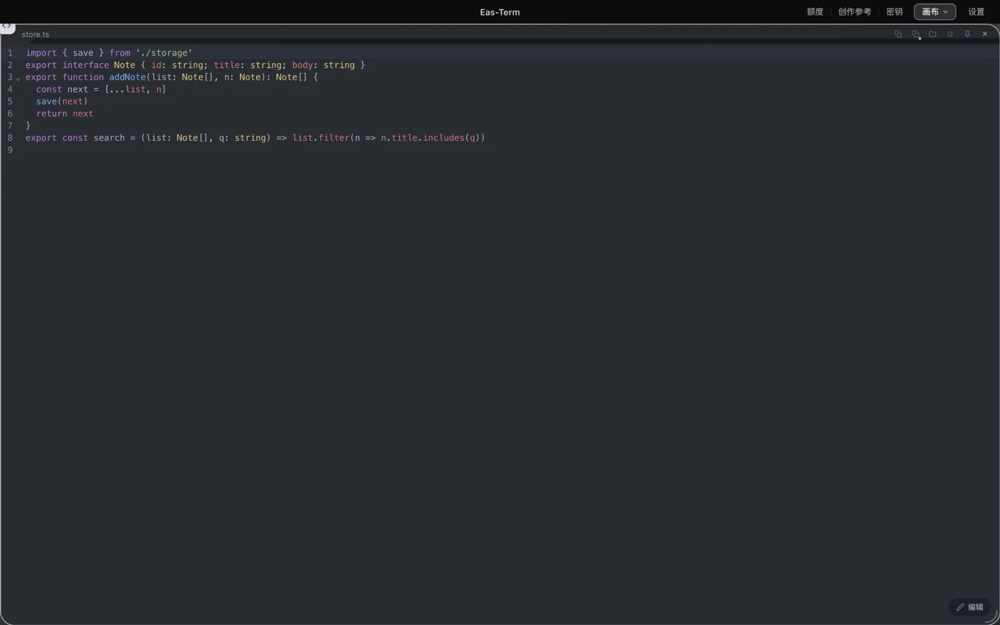
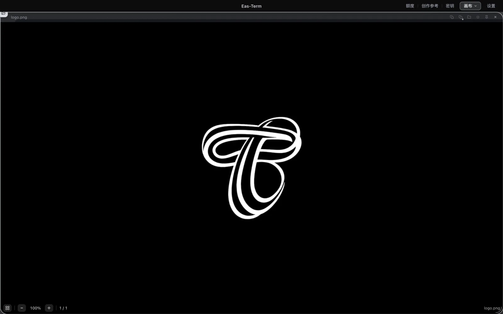
浏览器
Frame 右键「新建 › 浏览器」打开。它会保留登录状态；Google 等第三方登录会在独立的小窗里完成。
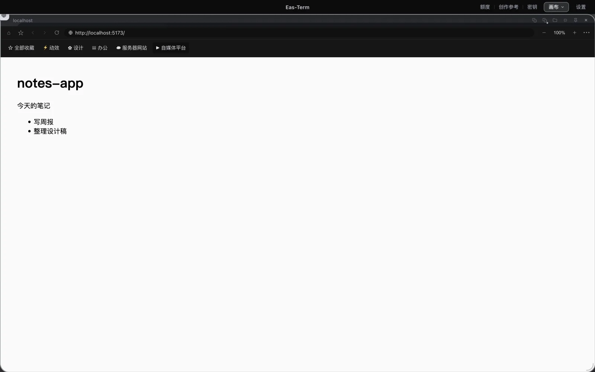
- 收藏栏：有动效、设计、办公、服务器网站、自媒体平台五类固定入口，也可以建自己的文件夹、加贴纸。
- 页面比例：最大化后地址栏右侧有「− 比例 ＋」，只缩放网页，不动画布。
- 页面观察窗：AI 帮你做网页时，可以把本机开发地址（localhost）放进观察窗，一边改一边看；AI 提交的汇报页可以和调试页上下分屏。
版本管理（Git）
分屏侧栏的「版本」页，或画布组件「版本管理」。
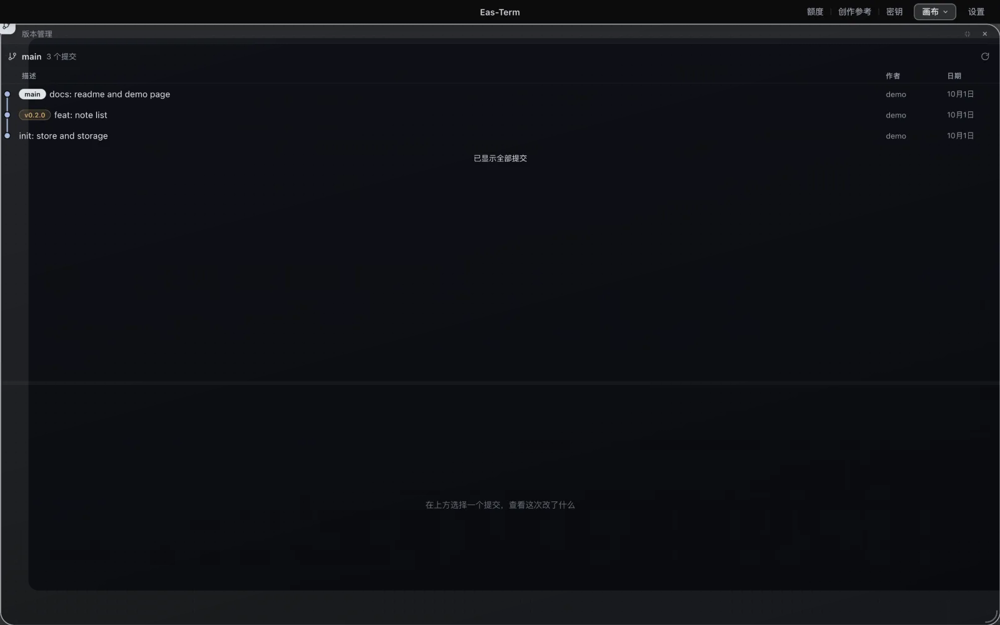
- 暂存、提交、丢弃改动；「AI 总结」帮你写这次改动的说明。
- 分支图和提交历史，往下滚会继续加载更早的提交；打了标签的提交有标记。
- 提交右键：检出、从这里建分支、比较、加标签、复制编号 / 说明、回退到这个版本。
代码地图
Frame 右键「组件 › 代码地图」。它把项目画成一张图，帮你看清模块之间谁依赖谁。
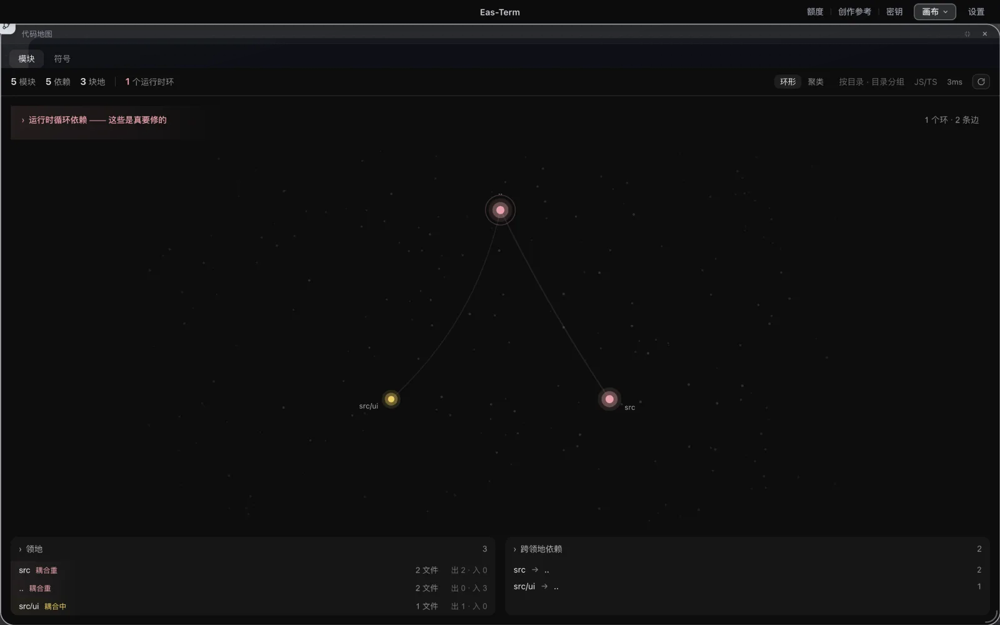
- 模块视图：文件 / 目录之间的依赖，环形或聚类两种排布；运行时的循环依赖会单独标出来，那是最值得修的。
- 符号视图：函数之间的调用关系和没人用的代码。
- 支持 JS/TS、Python（需要自己装 pyright）、C/C++、Swift。点文件名会在同一个 Frame 里打开代码。
团队与多 agent
让几个 AI 同时分工干活。默认是关着的，需要你在 Frame 标题栏打开多 agent 开关，AI 才能组队；组队前还会弹框让你确认。
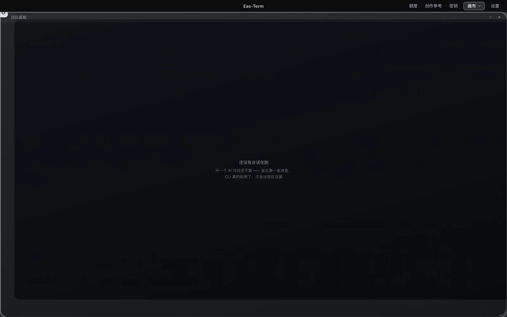
- Frame 右键「组件 › 团队面板」：看这个项目下所有 AI 会话的状态和用量，可以单个停，也可以全部停。
- 会话要真正发出第一条消息、CLI 跑起来之后才会出现在面板里。
- 每个 AI 可以在自己的独立分支里干活，彼此的进展写在协同板上。
左抽屉：文件信息
⌘B，或点画布左边缘的「文件信息」把手打开。
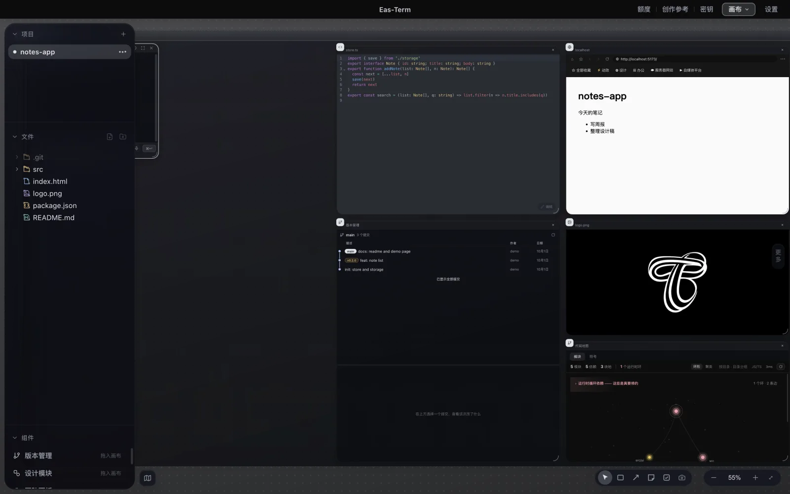
- 上面是项目列表，下面是当前项目的文件树：单击打开文件，拖到画布上变成模块。
- 底部是可以拖进 Frame 的组件（版本管理、设计模块等）。
- AI 完成任务或等你审批时，这里会冒出提醒气泡。
右抽屉：更多
⇧⌘B，或点画布右边缘的「更多」把手打开。左侧竖排四个页签，分别在下面四章介绍：用量、技能库、插件、知识库。点抽屉外面就会收起。
用量
「更多 › 用量」看用了多少：
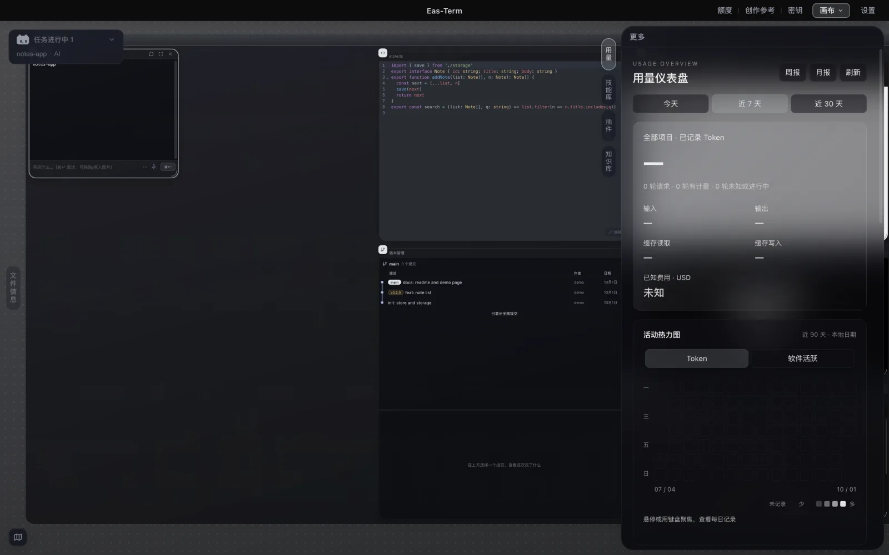
- 按今天 / 近 7 天 / 近 30 天看项目、会话、每一轮请求的 token 用量。
- 近 90 天热力图，可以在「Token」和「软件活跃」之间切换。
- 周报 / 月报小票，可以复制或保存成图片。
顶栏常驻的额度条见额度。
技能库
「更多 › 技能库」。列出你机器上各个 CLI 能用的技能（skill），按 CLI / 项目 / 全局分段，可以搜索。
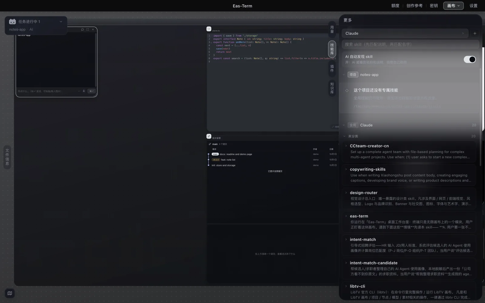
- 可以添加自定义目录，拖拽分类。
- 每个技能可以单独禁用（只在 Eas-Term 里生效，不动你的文件）。
- 「AI 自动发现」开关：关掉后 AI 不会自己挑技能用，只有你用 / 命令或点名时才生效，适合技能很多、AI 老是乱用的时候。
插件与插件市场
「更多 › 插件」。插件给 AI 和你多一些现成的能力，比如读写 Word / Excel / PPT、查天气、查高德地图、连 Notion / GitHub。
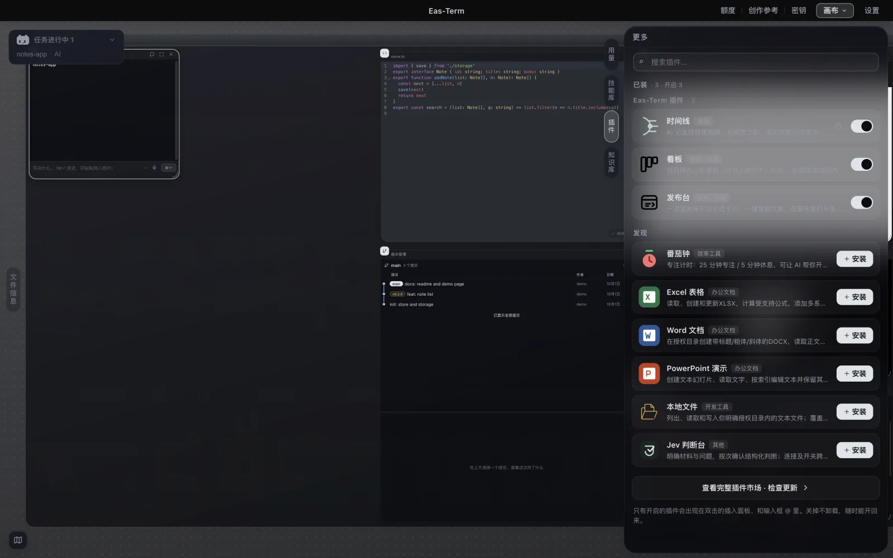
- 已装的插件有开关。只有开着的插件才会出现在双击插入面板和 @ 引用里，AI 也才能用。
- 没装的点「安装」；「查看完整插件市场」可以分类浏览、搜索、检查更新，也能添加别的插件来源（要求公开的 HTTPS 地址）。
- 随软件自带的：看板（项目三栏待办）、发布台（按平台写内容并检查违禁词）、时间线（AI 记录的项目里程碑、周报小票）、Jev 判断台（需要自己配置外部服务）。
- 系统插件「执行清单」「电脑视野」的开关在「设置 › MCP 接入 › 内置插件」。电脑视野能截图给 AI 看，敏感窗口会打码；要让它点鼠标或打字，必须在它的面板上单独限时授权，并给 Eas-Term 开 macOS「辅助功能」权限。
- 需要密钥的插件，密钥存在密钥柜里，不会出现在对话中。
知识库
「更多 › 知识库」。知识库就是你自己选的一个 markdown 文件夹，AI 和你都往里面记东西。
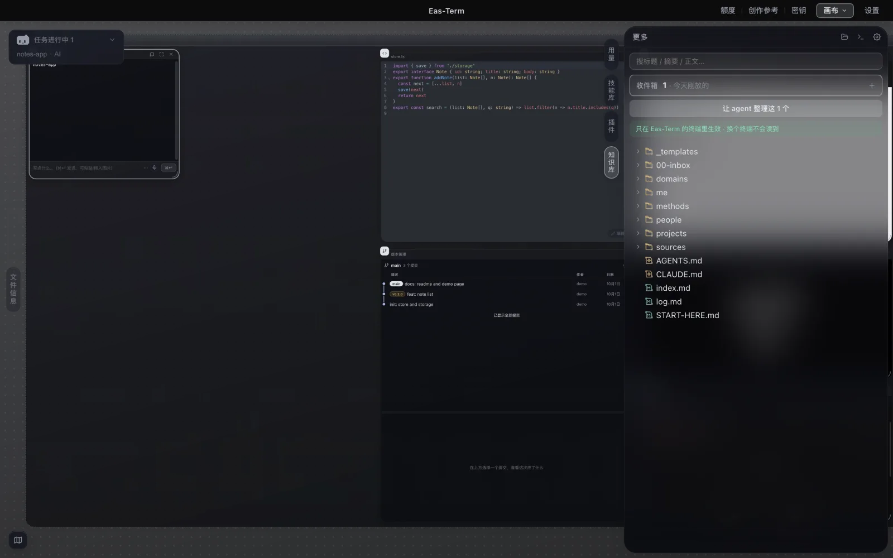
- 第一次用时选一个文件夹作为知识库位置。
- 新东西先进收件箱；让 AI 出一份归档计划，你逐条勾选确认后它才动手。知识库是 git 仓库时会先拍快照，归档不满意可以退回。
- 三个页签：文件、图谱（笔记之间的链接关系）、体检（死链、孤立页、缺摘要等）。支持反向链接。
- 音频 / 视频可以本地转录成文字存进来。
灵动岛
屏幕顶部的一个小胶囊，在你切到别的软件时告诉你 Eas-Term 里在发生什么：有几个项目在跑、哪个 AI 做完了、哪个在等你审批。
- Eas-Term 在前台时它会让开，不挡视线。
- 右键可以缩成一个小圆点；不想要可以在「设置 › 外观」关掉，或者 Dock 图标右键「显示灵动岛」再打开。
手机连接
「设置 › 手机连接」。用手机看这台电脑上的项目和 AI 的进展。
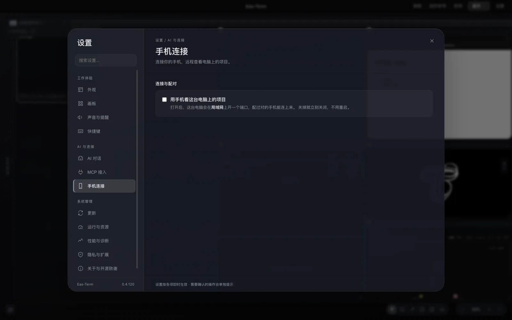
- 打开开关后，电脑会在局域网上开一个端口，显示二维码；手机扫码后，还要在电脑上点「允许」才算配对成功。
- 目前要求手机和电脑在同一个 Wi-Fi 下。
- 已配对的设备可以随时踢掉；手机上做过的操作有记录可查。不用时关掉开关，端口立刻关闭。
设置
⌘, 打开。左侧分三组，上方可以搜索设置项。
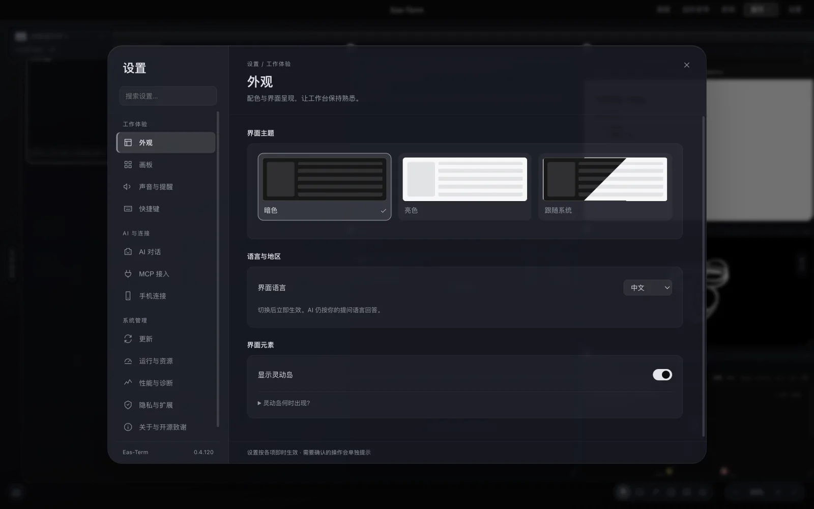
工作体验
- 外观：主题（暗色 / 亮色 / 跟随系统）、界面语言（中文 / English / 跟随系统，切换立即生效，AI 也会改用对应语言回答）、灵动岛开关。
- 画板：快照后要不要清掉标记。
- 声音与提醒：完成、待审批、后台运行三种提示音。
- 快捷键：每个快捷键都能改，也能恢复默认。
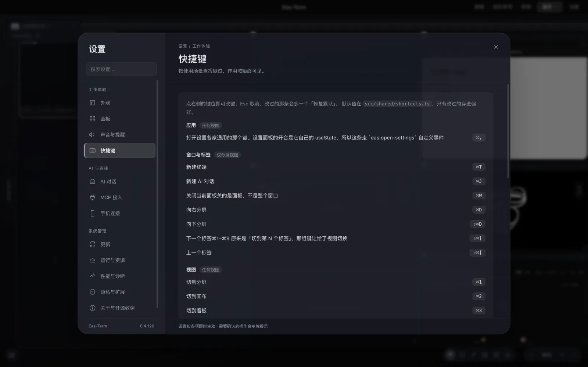
AI 与连接
- AI 对话：登录 Claude Code / Codex、「先问再做」、omp 审批三档、额度读取。
- MCP 接入：AI 调用 Eas-Term 工具的记录，核心连接（工作台、笔纵画板、使用指引）和内置插件的开关。
- 手机连接：见上一节。
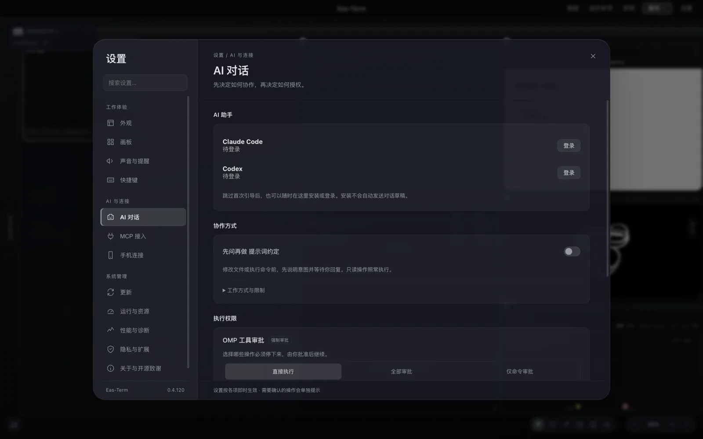
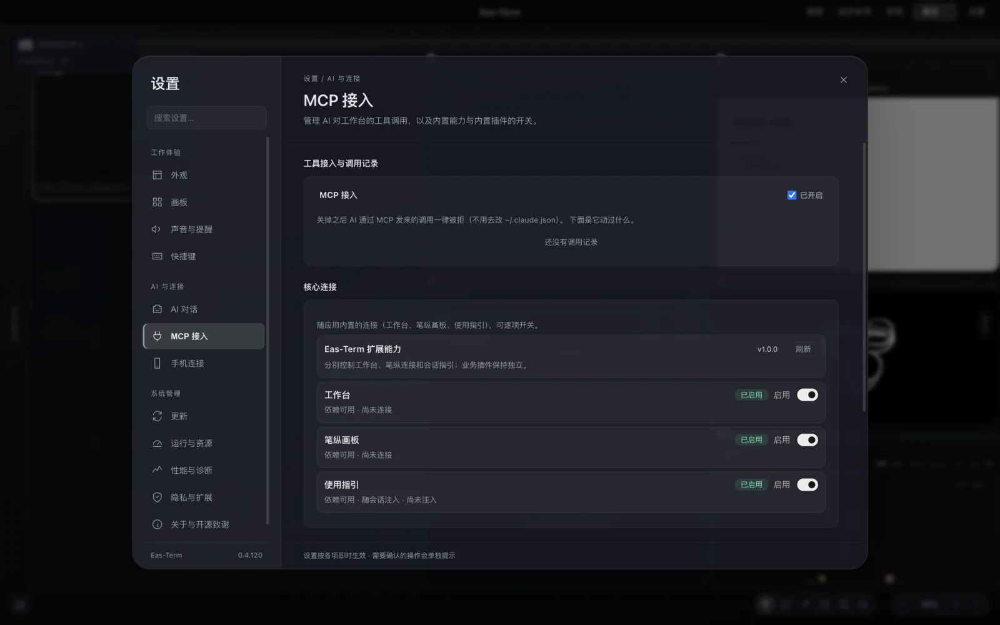
系统管理
- 更新：检查 Eas-Term 新版本（只下载并打开安装包，不会自动安装）；Claude Code、Codex 的自动更新默认关闭，可以打开，也能回退。
- 运行与资源、性能与诊断：同时跑多少个任务、图形状态、问题排查日志。
- 隐私与扩展：匿名使用统计（默认开，可关）；Eas-Term 往你电脑上写过的东西，逐项可以卸掉。详见隐私与数据。
- 关于与开源致谢。
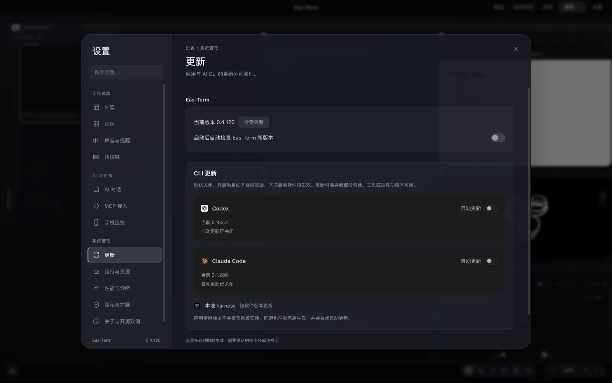
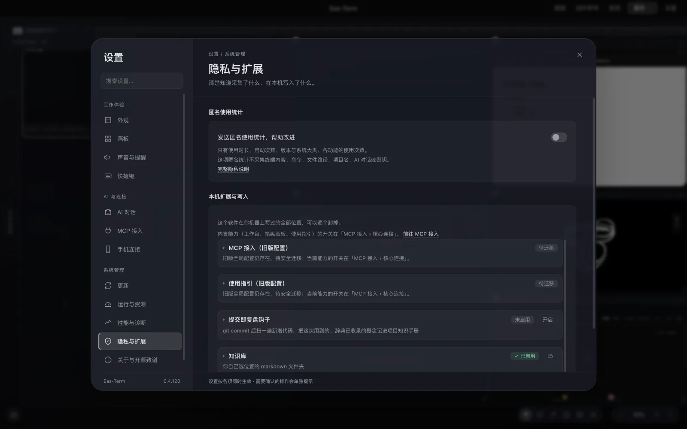
快捷键
常用快捷键如下（Windows 上把 ⌘ 换成 Ctrl）。全部可以在「设置 › 快捷键」里改。
| 操作 | macOS | 说明 |
|---|---|---|
| 打开设置 | ⌘, | |
| 新建终端 | ⌘T | |
| 新建 AI 对话 | ⌘J | |
| 关闭当前面板 | ⌘W | 分屏模式 |
| 向右 / 向下分屏 | ⌘D / ⇧⌘D | 分屏模式 |
| 下一个 / 上一个标签 | ⇧⌘] / ⇧⌘[ | 分屏模式 |
| 切到分屏 / 画布 / 看板 / 甘特图 | ⌘1 / ⌘2 / ⌘3 / ⌘4 | |
| 左抽屉 / 右抽屉 | ⌘B / ⇧⌘B | 画布 |
| 整理排列 | ⇧⌘O | 画布 |
| 放大 / 缩小 / 100% / 看全部 | ⌘= / ⌘- / ⌘0 / ⇧⌘0 | 画布 |
| 选择 / 矩形 / 箭头 / 批注 / 待办 | V / R / A / N / T | 画布 |
| 聚焦选中 | F | 画布 |
| 平移 | 按住空格拖动 | 画布 |
| 发送消息 | ⌘Enter | AI 对话 |
| 退出最大化 / 关闭弹层 | Esc |
常见问题
AI 对话显示「待登录」
说明对应的 CLI 还没登录。点「登录并继续」会打开终端让你用自己的账号登录；也可以点「改用 Codex」等换一个。
点了 Claude Code / Codex 按钮却变成「安装」
这台电脑还没装这个 CLI。点「安装」会开一个终端执行安装命令；网络受限时可以换用随软件自带的 omp。
打开的文件 / 网页过一会儿自己关了
内容模块同时最多 5 个，超过会关掉最早的。点模块右上角的图钉把它钉住。
AI 老是停下来等我审批
在「设置 › AI 对话」里关掉「先问再做」，或者把 omp 审批调成「直接执行」或「仅命令审批」。
怎么切换中英文
「设置 › 外观 › 界面语言」。默认跟随系统；从旧版本升级上来的用户保持中文。
我的数据会上传吗
你的项目文件、对话内容不会上传给 Eas-Term。匿名使用统计只有时长和功能计数，可以在设置里关掉。完整说明见隐私与数据。
还有问题
看更新日志了解最近的变化。